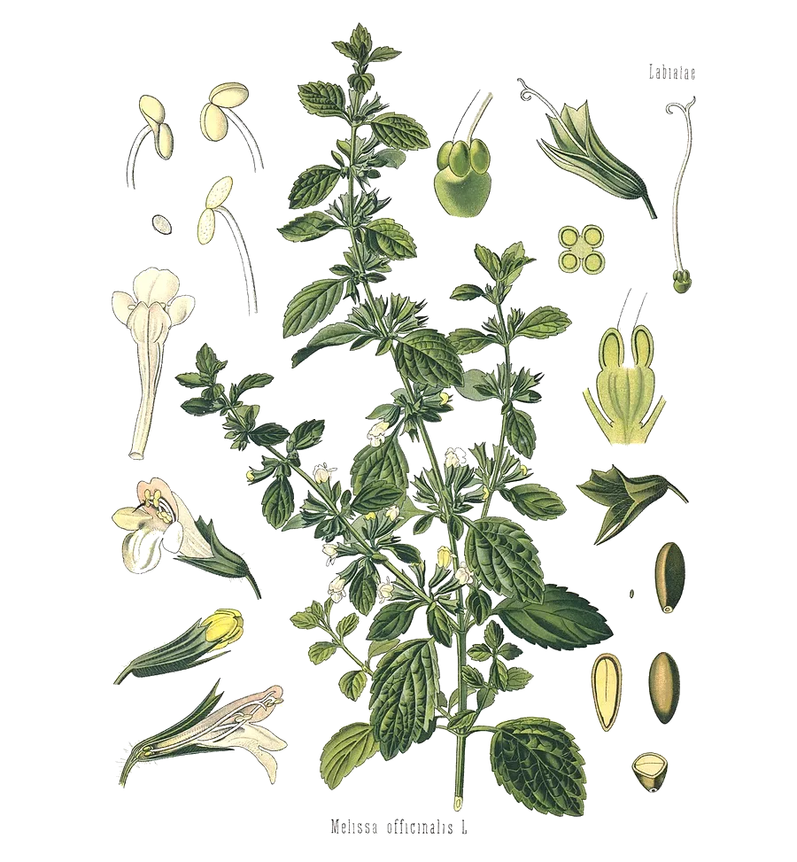

After citronella grass. Geraniol with one double bond filled in by two extra hydrogens.
- Scent
- rosy, citrus-like, fresh, softly green Reference description: “fresh rosy odor” (HSDB)
- Found in
- rose, geranium, citronella, lemongrass, lemon balm, eucalyptus, mint.
- In our honeys
- Sunshine Grounding Rest as a flavouring ingredient; amount not published
- In food
- Evaluated as a flavouring in 2003 by JECFA, the FAO/WHO expert committee on food additives: covered by a group acceptable daily intake of 0–0.5 mg per kg of body weight, shared with citral, linalool, geranyl acetate and linalyl acetate. Its entry in the JECFA database
- Molar mass
- 156.26 g/mol
- Boiling point
- 224–225 °C HSDB, JECFA
- CAS number
- 106-22-9
- FEMA number
- 2309
- Record
- PubChem 8842
- Systematic name
- 3,7-dimethyloct-6-en-1-ol
What has been studied So far: animals
- AnimalsIn a 2010 study, citronellol injected into the veins of rats (1 to 20 mg per kg) lowered blood pressure, and it relaxed isolated artery tissue.18
- Not knownWhether any of this happens when it is eaten, and at what amount.